Brújula
Su aguja imantada siempre apunta al norte. Sirve para orientarse en el campo.

GEOGRAFÍAARCHIVO DE CONSULTA · RECURSO 04
Los instrumentos que usan los geógrafos para medir, orientarse y estudiar la Tierra.
GRUPO 01
SABER DÓNDE ESTAMOS
Y HACIA DÓNDE VAMOS
Su aguja imantada siempre apunta al norte. Sirve para orientarse en el campo.
Es la representación más fiel de la Tierra, porque muestra su forma esférica.
Representa el territorio en una superficie plana. Ver más sobre mapas.
Usa satélites para dar la ubicación exacta (latitud y longitud). Tu celular tiene uno.
GRUPO 02
LOS INSTRUMENTOS DE
UNA ESTACIÓN METEOROLÓGICA
| Instrumento | ¿Qué mide? | Unidad |
|---|---|---|
| Termómetro | La temperatura del aire | Grados Celsius (°C) |
| Pluviómetro | La cantidad de lluvia caída | Milímetros (mm) |
| Anemómetro | La velocidad del viento | Kilómetros por hora (km/h) |
| Veleta | La dirección del viento | Puntos cardinales (N, S, E, O) |
| Barómetro | La presión atmosférica | Hectopascales (hPa) |
| Higrómetro | La humedad del aire | Porcentaje (%) |
GRUPO 03
PARA ESTUDIAR EL RELIEVE,
EL AGUA Y LOS SERES VIVOS
ACTIVIDAD
MIDE LA LLUVIA
DESDE TU CASA